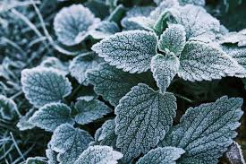

Warum sind Pflanzen wichtig?

Pflanzen produzieren Sauerstoff, den wir zum Atmen brauchen. Sie sind außerdem die Grundlage vieler Nahrungsketten.
Durch die Photosynthese wandeln Pflanzen Sonnenlicht, Wasser und Kohlendioxid in Energie um und geben dabei Sauerstoff an die Atmosphäre ab. Ohne diesen Prozess wäre Leben auf der Erde, wie wir es kennen, nicht möglich. Pflanzen sind daher unverzichtbar für das ökologische Gleichgewicht und das Überleben von Menschen und Tieren.
Darüber hinaus bilden sie die Basis fast aller Nahrungsketten. Pflanzenfresser ernähren sich direkt von ihnen, während Fleischfresser wiederum von diesen Tieren abhängig sind. Wenn Pflanzen verschwinden oder geschädigt werden, hat das Auswirkungen auf ganze Ökosysteme und kann das Gleichgewicht der Natur stören.
Pflanzen bieten außerdem Lebensraum und Schutz für zahlreiche Tierarten. Wälder, Wiesen und sogar einzelne Bäume oder Sträucher sind wichtige Rückzugsorte, Brutplätze und Nahrungsquellen. Auch für den Menschen spielen Pflanzen eine große Rolle – nicht nur als Nahrungsmittel, sondern auch als Rohstoffe, Heilmittel und Erholungsräume.
Deshalb ist es wichtig, Pflanzen zu schützen und bewusst mit ihnen umzugehen. Jeder kann dazu beitragen, indem er die Natur respektiert, Pflanzen pflegt oder selbst neue anpflanzt. So helfen wir, die Vielfalt und Stabilität unserer Umwelt langfristig zu erhalten. 🌿
Arten von Pflanzen
- Bäume
- Blumen
- Gräser
- Sträucher